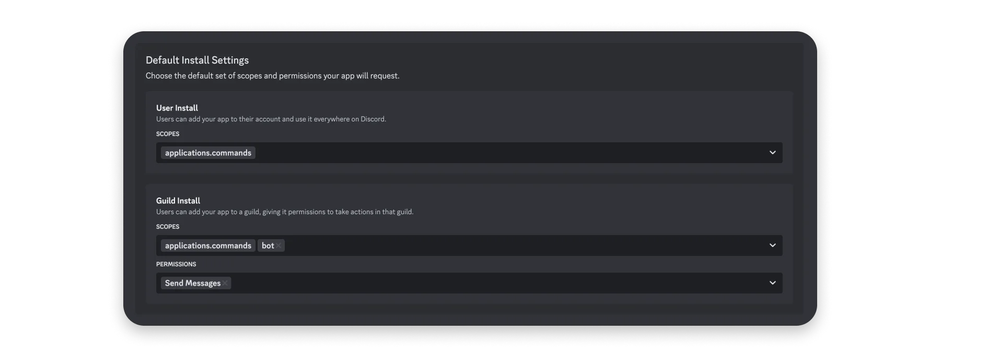

编写你的第一个 app
Discord 应用让您能够通过一系列 API 和交互功能来自定义和扩展 Discord。本指南将带您使用 JavaScript 构建您的第一个 Discord 应用，最终您将打造出一个能够使用斜杠命令、发送消息并响应组件交互的应用。
如果您有兴趣在 iframe 中构建游戏或社交体验，可以参考构建活动的教程。
我们将构建一个 Discord 应用，让用户可以玩石头剪刀布（但包含 7 种选择，而非传统的 3 种）。本指南面向初学者，但假设您已具备一定的 JavaScript 基础知识。
Note
译注: 本节中所有与示例项目相关的内容将默认折叠，以便阅读
步骤 0：项目设置
代码内容，可无视
开始之前，您需要配置本地环境，并从示例应用仓库获取项目代码。
我们将借助 ngrok 在本地进行开发，当然您也可以使用自己偏好的开发环境。
如果您尚未安装 NodeJS，请先完成安装。
安装 NodeJS 后，打开命令行并克隆项目代码：
git clone https://github.com/discord/discord-example-app.git
接着进入目录并安装项目依赖：
# 进入目录
cd discord-example-app
# 安装依赖
npm install
本教程所用示例应用的项目结构概览
完成以上步骤后，在您喜欢的代码编辑器中打开新项目，接下来我们将着手设置您的 Discord 应用。
步骤 1：创建应用
首先，如果您还没有应用，需要在开发者门户中创建一个：
点击这里 -> 创建应用
输入应用名称，然后点击“创建”。
创建应用后，您将进入应用设置的“通用信息”页面，可以在此更新应用的基本信息，例如描述和图标。您还会看到应用 ID 和交互端点 URL，这些将在指南后续部分使用。
获取凭据
我们需要设置并获取一些敏感信息，例如应用的令牌和 ID。
令牌用于授权 API 请求并承载应用的权限，因此极为敏感。请务必不要共享令牌或将其提交到任何版本控制系统。
示例项目配置，可无视
回到项目文件夹，将 .env.sample 文件重命名为 .env。我们将在此存储所有应用的凭据。
您需要从应用设置中获取三个值并填入 .env 文件：
- 在“通用信息”页面，复制应用 ID 的值。在
.env文件中，将<YOUR_APP_ID>替换为您复制的 ID。 - 返回“通用信息”页面，复制公钥的值（用于验证 HTTP 请求是否来自 Discord）。在
.env文件中，将<YOUR_PUBLIC_KEY>替换为您复制的值。 - 在“机器人”页面的“令牌”部分，点击“重置令牌”以生成新的机器人令牌。在
.env文件中，将<YOUR_BOT_TOKEN>替换为您的新令牌。
除非重新生成，否则您将无法再次查看令牌，因此请务必将其保存在安全的地方（例如密码管理器）。
现在您已获得所需凭据，接下来让我们配置机器人用户和安装设置。
配置机器人
新创建的应用默认启用了机器人用户。机器人用户使您的应用在安装到服务器时，能够像其他服务器成员一样出现和运作。
在应用设置的左侧边栏中，有一个“机器人”页面（我们之前在此获取了令牌）。在此页面，您还可以配置诸如特权意图或是否允许其他用户安装等设置。
Info
意图 (intent) 决定了当你的应用创建网关 API 连接时，Discord 将向其发送哪些事件。例如，如果你希望你的应用在用户给消息添加反应时执行某个操作，你可以传入 GUILD_MESSAGE_REACTIONS (1 << 10) 意图。
某些意图是特权意图，这意味着它们允许你的应用访问可能被视为敏感的数据（例如消息内容）。
特权意图可以在应用设置的“BOT”页面配置，但它们必须在你的应用通过验证之前获得批准。标准的非特权意图不需要任何额外的权限或配置。
关于意图的更多信息，以及可用意图的完整列表（及其相关联的事件）可在网关文档中找到。
目前我们无需在此进行额外配置，但根据您的应用使用场景，未来可能需要调整。现在让我们着手准备应用的安装设置。
选择安装上下文
接下来，我们将确定您的应用在 Discord 中的安装位置，这取决于您的应用所支持的安装上下文。
什么是安装上下文？
Info
安装上下文决定了您的应用可以安装在哪里：安装至服务器、安装至用户，或两者兼可。
安装在服务器环境中的应用必须由拥有 MANAGE_GUILD 权限的服务器成员授权，并对服务器的所有成员可见。
安装在用户环境中的应用仅对授权用户可见，因此不需要任何服务器特定的权限。它在用户的所有服务器、私信（DMs）和群组私信（GDMs）中都可见——但是，它们仅限于使用命令。
点击左侧边栏中的“安装”选项，然后在“安装上下文”部分确保同时勾选“用户安装”和“服务器安装”。
某些应用可能仅支持一种安装上下文——例如，审核类应用可能仅适用于服务器环境。但默认情况下，我们建议同时支持两种安装上下文。如需了解更多关于用户可安装应用的详细信息，请参阅用户可安装应用教程。
设置安装链接
安装链接为用户提供了在 Discord 中安装应用的便捷方式。我们将配置默认的 Discord 提供链接，但您也可以在应用文档中了解更多不同类型的安装链接。
在安装页面中，进入“安装链接”部分，如果尚未选中，请选择“Discord 提供链接”。
选择 Discord 提供链接后，将出现一个新的“默认安装设置”部分，接下来我们将对其进行配置。
添加作用域和机器人权限
应用需要获得安装用户的授权才能在 Discord 中执行操作（例如创建斜杠命令或获取服务器成员列表）。在安装应用之前，让我们先添加作用域和权限。
!!! Info 什么是作用域和权限？
创建应用程序时，作用域和权限决定了你的应用程序在 Discord 中能够执行的操作和能够访问的内容。
OAuth2 作用域 (SCOPES) 决定了您的应用在 Discord 中可以执行的操作和访问的内容。这是由安装应用到服务器的用户授予的。
权限 (Bot Permissions) 是针对你的机器人的细粒度权限，与 Discord 中其他用户所拥有的权限相同。它们可以由安装用户批准，或稍后在服务器设置中或通过权限覆盖进行更新。这些权限仅适用于安装到服务器的应用，因为安装到用户上下文的应用程序只能响应命令。
在安装页面的“默认安装设置”部分：
- 对于用户安装，添加
applications.commands权限范围。 - 对于服务器安装，添加
applications.commands权限范围和bot权限范围。选择bot后，将出现一个新的“权限”菜单，用于选择机器人用户的权限。选择您的应用可能需要的任何权限——目前，我仅选择发送消息权限。

查看所有 OAuth2 作用域 列表，或在文档中了解更多关于 权限 的信息。
安装您的应用
开发应用时，建议您在自己的用户账户（针对用户可安装应用）以及他人未活跃使用的服务器（针对服务器可安装应用）上进行构建和测试。如果您还没有自己的服务器，可以免费创建一个。
添加作用域后，复制之前“安装链接”部分的 URL。
由于我们的应用支持两种安装上下文，我们将把新应用安装到测试服务器和您的用户账户，以便在两种安装上下文中进行测试。
安装到服务器
要将应用安装到测试服务器，请从安装页面复制应用的默认安装链接。将链接粘贴到浏览器中并按回车键，然后在安装提示中选择“添加到服务器”。
选择您的测试服务器，并按照安装提示操作。应用成功添加到测试服务器后，您应该能在成员列表中看到它。
安装到用户账户
接下来，将应用安装到您的用户账户。在浏览器中粘贴相同的安装链接并按回车键。这次，在安装提示中选择“添加到我的应用”。
按照安装提示将应用安装到您的用户账户。安装完成后，您可以与其开启私信对话。
第二步：运行您的应用
示例项目代码，可无视
将您的应用程序配置并安装到测试服务器和账户后，接下来我们一同探索代码部分。
为简化开发流程，本应用使用了discord-interactions，它提供了类型定义和一系列辅助函数。若您倾向于使用其他语言或库，可参考社区资源文档。
### 安装斜杠命令
安装斜杠命令时，应用采用了node-fetch。具体实现可在utils.js文件内的DiscordRequest()函数中查看。
项目中包含一个register脚本，用于安装commands.js底部定义的ALL_COMMANDS命令集。该脚本通过调用HTTP API的PUT /applications/<APP_ID>/commands端点，将这些命令注册为全局命令。
如需自定义命令或添加新命令，可参考命令文档中的命令结构说明。
请在项目文件夹内的终端中运行以下命令：
├── examples -> 简短且功能特定的示例应用
│ ├── app.js -> 完整的app.js代码
│ ├── button.js
│ ├── command.js
│ ├── modal.js
│ ├── selectMenu.js
├── .env -> 存储您的凭据和ID
├── app.js -> 应用的主入口文件
├── commands.js -> 斜杠命令负载及辅助功能
├── game.js -> 石头剪刀布游戏专用逻辑
├── utils.js -> 实用函数与常量定义
├── package.json
├── README.md
└── .gitignore
返回您的服务器后，应能看到斜杠命令已显示。但若尝试运行，目前不会有任何反应，因为应用尚未接收或处理来自Discord的请求。
步骤3：处理交互
为使应用能够接收斜杠命令及其他交互请求，Discord需要一个可公开访问的URL来发送这些请求。该URL可在应用的设置中配置为“交互端点URL”。
设置公共端点
要设置公共端点，我们将启动基于Express框架的应用服务器，并借助ngrok将其公开至互联网。
首先，进入项目文件夹并运行以下命令以启动应用：
npm run register
此时应有输出提示应用正运行在端口3000。实际上，应用已在后台准备好处理来自Discord的交互请求，包括验证安全请求头及响应PING请求。本教程略过了许多实现细节，完整内容可参阅交互概述文档。
默认情况下，服务器监听3000端口的请求，如需更改端口，可在.env文件中设置PORT变量。
接下来启动ngrok隧道。若本地尚未安装ngrok，请按ngrok下载页的指引完成安装。
安装完成后，打开新终端并创建公共端点，将请求转发至Express服务器：
npm run start
连接建立后，您将看到类似如下的输出：
ngrok http 3000
下一步中，我们将使用此转发URL作为公共可访问地址，供Discord发送交互请求。
添加交互端点URL
进入您的应用设置，在“常规信息”页的“交互端点URL”栏中，粘贴新的ngrok转发URL并追加/interactions。

点击“保存更改”，并确认端点验证成功。
若验证遇到问题，请检查ngrok与应用是否运行在同一端口，并确认已正确复制ngrok URL。
示例应用通过两种方式自动处理验证流程：
- 它利用
PUBLIC_KEY和 discord-interactions 包，并通过一个包装函数（从utils.js导入）使其适配 Express 的verify接口。该过程会在每一个传入应用的请求中执行。 - 它能够响应传入的
PING请求。
关于如何配置应用以接收交互的更多信息，可查阅 交互相关文档。
处理斜杠命令请求
在端点验证通过后，请导航至项目中的 app.js 文件，并找到处理 /test 命令的代码块：
// "test" command
if (name === 'test') {
// Send a message into the channel where command was triggered from
return res.send({
type: InteractionResponseType.CHANNEL_MESSAGE_WITH_SOURCE,
data: {
flags: InteractionResponseFlags.IS_COMPONENTS_V2,
components: [
{
type: MessageComponentTypes.TEXT_DISPLAY,
// Fetches a random emoji to send from a helper function
content: `hello world ${getRandomEmoji()}`
}
]
},
});
}
上述代码会在发起交互的频道、私信或群组私信中返回一条消息作为响应。所有可用的响应类型（例如使用模态框进行响应）均可在 官方文档 中查阅。
请前往您的服务器，确保应用的 /test 斜杠命令正常工作。触发该命令时，应用应当发送一条包含“hello world”并附带随机表情符号的消息。
在接下来的部分，我们将添加一个额外命令，该命令会使用斜杠命令选项、按钮和选择菜单，来构建一个石头剪刀布游戏。
步骤 4：添加消息组件
/challenge 命令用于启动我们设计的石头剪刀布风格游戏。一旦该命令被触发，应用就会向频道发送消息组件，引导用户完成游戏流程。
添加带选项的命令
/challenge 命令（在 commands.js 中命名为 CHALLENGE_COMMAND）带有一个 options 数组。在我们的应用中，这些选项是对象，代表用户在玩石头剪刀布时可选择的不同内容，它们由 game.js 中的 RPSChoices 键生成。
有关命令选项及其结构的更多信息，请参见 相关文档。
虽然本指南不会深入讲解 game.js 文件，但欢迎您自行探索并修改命令或其选项。
用于处理挑战命令并通过带按钮的消息进行响应的代码
// "challenge" command
if (name === 'challenge' && id) {
// Interaction context
const context = req.body.context;
// User ID is in user field for (G)DMs, and member for servers
const userId = context === 0 ? req.body.member.user.id : req.body.user.id;
// User's object choice
const objectName = req.body.data.options[0].value;
// Create active game using message ID as the game ID
activeGames[id] = {
id: userId,
objectName,
};
return res.send({
type: InteractionResponseType.CHANNEL_MESSAGE_WITH_SOURCE,
data: {
flags: InteractionResponseFlags.IS_COMPONENTS_V2,
components: [
{
type: MessageComponentTypes.TEXT_DISPLAY,
// Fetches a random emoji to send from a helper function
content: `Rock papers scissors challenge from <@${userId}>`,
},
{
type: MessageComponentTypes.ACTION_ROW,
components: [
{
type: MessageComponentTypes.BUTTON,
// Append the game ID to use later on
custom_id: `accept_button_${req.body.id}`,
label: 'Accept',
style: ButtonStyleTypes.PRIMARY,
},
],
},
],
},
});
}
用于处理按钮点击并以短暂消息响应的代码
if (type === InteractionType.MESSAGE_COMPONENT) {
// custom_id set in payload when sending message component
const componentId = data.custom_id;
if (componentId.startsWith('accept_button_')) {
// get the associated game ID
const gameId = componentId.replace('accept_button_', '');
// Delete message with token in request body
const endpoint = `webhooks/${process.env.APP_ID}/${req.body.token}/messages/${req.body.message.id}`;
try {
await res.send({
type: InteractionResponseType.CHANNEL_MESSAGE_WITH_SOURCE,
data: {
// Indicates it'll be an ephemeral message
flags: InteractionResponseFlags.EPHEMERAL | InteractionResponseFlags.IS_COMPONENTS_V2,
components: [
{
type: MessageComponentTypes.TEXT_DISPLAY,
content: 'What is your object of choice?',
},
{
type: MessageComponentTypes.ACTION_ROW,
components: [
{
type: MessageComponentTypes.STRING_SELECT,
// Append game ID
custom_id: `select_choice_${gameId}`,
options: getShuffledOptions(),
},
],
},
],
},
});
// Delete previous message
await DiscordRequest(endpoint, { method: 'DELETE' });
} catch (err) {
console.error('Error sending message:', err);
}
}
return;
}
响应选择菜单交互和更新游戏状态的代码
if (type === InteractionType.MESSAGE_COMPONENT) {
// custom_id set in payload when sending message component
const componentId = data.custom_id;
if (componentId.startsWith('accept_button_')) {
// get the associated game ID
const gameId = componentId.replace('accept_button_', '');
// Delete message with token in request body
const endpoint = `webhooks/${process.env.APP_ID}/${req.body.token}/messages/${req.body.message.id}`;
try {
await res.send({
type: InteractionResponseType.CHANNEL_MESSAGE_WITH_SOURCE,
data: {
// Indicates it'll be an ephemeral message
flags: InteractionResponseFlags.EPHEMERAL | InteractionResponseFlags.IS_COMPONENTS_V2,
components: [
{
type: MessageComponentTypes.TEXT_DISPLAY,
content: 'What is your object of choice?',
},
{
type: MessageComponentTypes.ACTION_ROW,
components: [
{
type: MessageComponentTypes.STRING_SELECT,
// Append game ID
custom_id: `select_choice_${gameId}`,
options: getShuffledOptions(),
},
],
},
],
},
});
// Delete previous message
await DiscordRequest(endpoint, { method: 'DELETE' });
} catch (err) {
console.error('Error sending message:', err);
}
} else if (componentId.startsWith('select_choice_')) {
// get the associated game ID
const gameId = componentId.replace('select_choice_', '');
if (activeGames[gameId]) {
// Interaction context
const context = req.body.context;
// Get user ID and object choice for responding user
// User ID is in user field for (G)DMs, and member for servers
const userId = context === 0 ? req.body.member.user.id : req.body.user.id;
const objectName = data.values[0];
// Calculate result from helper function
const resultStr = getResult(activeGames[gameId], {
id: userId,
objectName,
});
// Remove game from storage
delete activeGames[gameId];
// Update message with token in request body
const endpoint = `webhooks/${process.env.APP_ID}/${req.body.token}/messages/${req.body.message.id}`;
try {
// Send results
await res.send({
type: InteractionResponseType.CHANNEL_MESSAGE_WITH_SOURCE,
data: {
flags: InteractionResponseFlags.IS_COMPONENTS_V2,
components: [
{
type: MessageComponentTypes.TEXT_DISPLAY,
content: resultStr
}
]
},
});
// Update ephemeral message
await DiscordRequest(endpoint, {
method: 'PATCH',
body: {
components: [
{
type: MessageComponentTypes.TEXT_DISPLAY,
content: 'Nice choice ' + getRandomEmoji()
}
],
},
});
} catch (err) {
console.error('Error sending message:', err);
}
}
}
return;
}
……大功告成！🎊 现在就去测试您的应用，确保一切运转如常。
后续步骤
恭喜！您已成功构建第一个 Discord 应用！🤖
希望您从中了解了 Discord 应用的基本配置与交互实现。接下来，您可以继续扩展应用功能，或探索更多可能性。